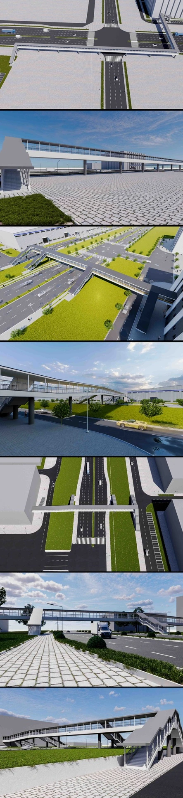

Architecture
Pedestrian Bridge & Site
Bridge and site models based on the designer’s proposal, with rendered views from multiple angles to support design communication.
Project typeArchitecture
My contributionSite modeling / Rendering
ToolsAutoCAD / SketchUp / 3ds Max

Project context
Project work at BYD Survey and Design Co., Ltd., providing visual support for design discussions, supplier coordination and planning submissions.
What I did
- Modeled the pedestrian bridge and its real-world site from the design proposal.
- Produced multiple views of the bridge, roads and surrounding environment.
- Updated the work as the design evolved and prepared images for coordination and planning submissions.
Work & process
1 / Open original image

Contribution & credits
Team project. My responsibilities were bridge and site modeling and rendered images.